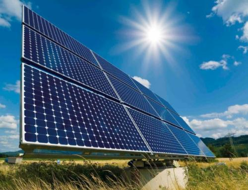
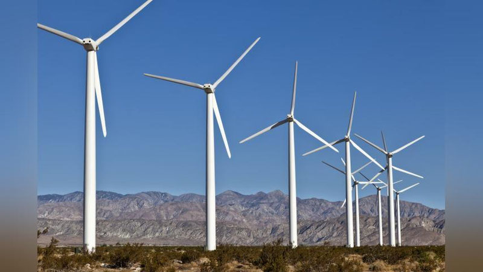
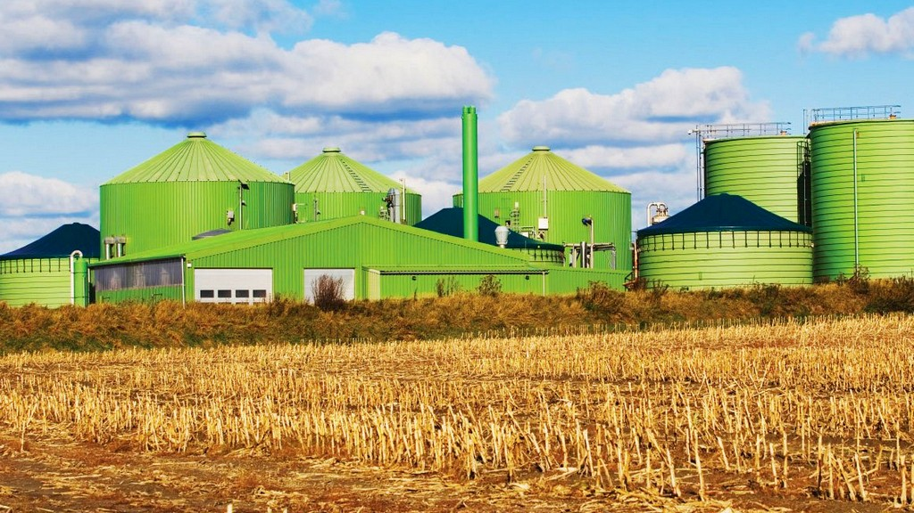

Qayta Tiklanuvchi Energiyalar
1.1. Qayta tiklanuvchi energiya manbalari: Umumiy tushuncha va ahamiyati
Qayta tiklanuvchi energiya manbalari – bu tabiatda doimiy ravishda tiklanib turadigan va tugamaydigan manbalardan olinadigan energiya turlaridir.
Ularga quyosh, shamol, suv (gidroenergetika), biomassа va geotermal energiya kiradi.
An'anaviy qazib olinadigan yoqilg'ilardan farqli o'laroq, QTM atrof-muhitga minimal zarar yetkazadi va "issiqxona gazlari" chiqindilarini kamaytirish orqali iqlim o'zgarishiga qarshi kurashishning eng samarali vositasi hisoblanadi.
O'zbekiston uchun QTMga o'tish nafaqat ekologik, balki iqtisodiy va strategik zaruratdir. Mamlakat aholisi va iqtisodiyoti jadal o'sib borayotgani sababli, elektr energiyasiga bo'lgan talab 2030-yilgacha deyarli ikki baravar oshishi kutilmoqda. Shu bilan birga, tabiiy gaz zaxiralari cheklangan bo'lib, 16 yildan kamroq vaqt ichida tugashi mumkin.
Shu sababli, O'zbekiston hukumati "Yashil iqtisodiyotga o'tish strategiyasi" doirasida QTM ulushini keskin oshirishni maqsad qilgan. 2030-yilgacha elektr energiyasi ishlab chiqarishning 40-50%ini qayta tiklanuvchi manbalar hisobiga ta'minlash rejalashtirilgan.
1.2. Quyosh energiyasidan foydalanish
O'zbekiston quyosh energiyasidan foydalanish uchun ulkan salohiyatga ega. Mamlakatda yiliga 320 dan ortiq quyoshli kun kuzatiladi, bu esa fotoelektr stansiyalari (FES) qurish uchun juda qulay sharoit yaratadi.
- Texnologiya: Fotoelektr panellari quyosh nurini to'g'ridan-to'g'ri elektr energiyasiga aylantiradi.
- O'zbekistondagi loyihalar: Hukumat 2030-yilgacha 7-10 GVtgacha quyosh energiyasi quvvatlarini ishga tushirishni rejalashtirgan. Bu borada Osiyo taraqqiyot banki (OTB) va Xalqaro moliya korporatsiyasi (IFC) kabi xalqaro hamkorlar bilan birgalikda davlat-xususiy sheriklik asosida yirik loyihalar amalga oshirilmoqda.

1.3. Shamol generatorlaridan foydalanish istiqbollari
- Salohiyat: O'zbekistonning ayrim hududlarida, xususan, Navoiy viloyati va Qoraqalpog'iston Respublikasida shamol energetikasini rivojlantirish uchun qulay sharoitlar mavjud.
- Maqsadlar: 2030-yilgacha 5 GVtgacha shamol elektr stansiyalarini (SHES) qurish rejalashtirilgan. Bu nafaqat energiya ta'minotini diversifikatsiya qilish, balki suv resurslari tanqisligi sharoitida qo'shni davlatlar bilan yuzaga kelishi mumkin bo'lgan geosiyosiy muammolarni yumshatish uchun ham muhim hisoblanadi.

1.4. Biomassadan energiya olish
Biomassa – bu o'simlik va hayvonot olamiga mansub bo'lgan organik moddalardir. O'zbekiston kabi agrar mamlakat uchun bu katta, ammo hali to'liq ishga solinmagan resursdir.
- Xomashyo: Qishloq xo'jaligi chiqindilari (g'o'zapoya, somon), chorvachilik go'ngi va yog'och qirindilari biomassaning asosiy manbalaridir.
- Texnologiyalar:
- To'g'ridan-to'g'ri yoqish: Biomassani maxsus qozonxonalarda yoqib, issiqlik va elektr energiyasi olish.
- Biogaz ishlab chiqarish: Organik chiqindilarni anaerob (kislorodsiz) sharoitda achitish orqali metan gazini olish. Bu gazdan isitish va elektr energiyasi ishlab chiqarishda foydalanish mumkin.
